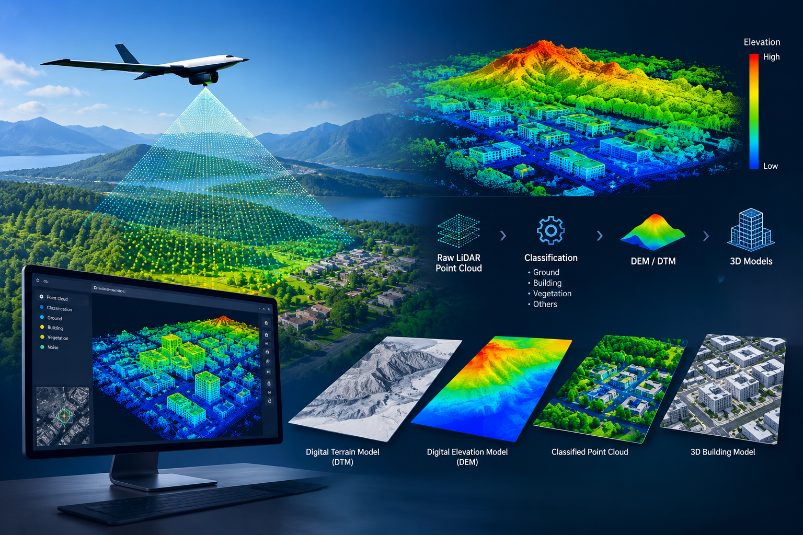
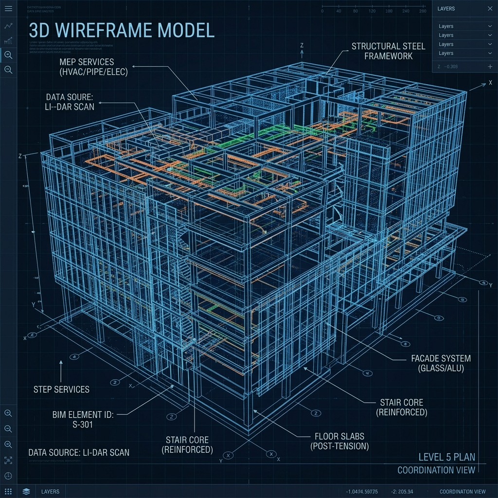

From raw spatial data to intelligent 2D/3D deliverables — our core processing services form a complete geospatial ecosystem.
Airowtek's photogrammetry service transforms overlapping photographs into precise, survey-grade 2D maps and 3D models. Leveraging advanced SfM (Structure-from-Motion) algorithms and 3D stereo compilation, we process provided imagery to produce dense point clouds, digital surface models (DSMs), digital terrain models (DTMs), and textured 3D meshes.
Our processing workflows achieve high absolute accuracy, ensuring that deliverables are immediately usable in engineering and planning workflows.

Light Detection and Ranging (LiDAR) provides the highest-density 3D point cloud data available in the geospatial industry. Airowtek processes both airborne and terrestrial LiDAR datasets, handling millions of points from raw point cloud data.
Unlike photogrammetry, LiDAR penetrates vegetation canopy to reveal bare-earth terrain beneath forest cover — a critical advantage for corridor mapping, forestry, and archaeological surveys.
An orthophoto is a geometrically corrected image where all perspective distortions have been removed — making it a true map, not just a picture. Airowtek produces high-resolution orthophotos with precise ground sampling distances (GSD).
Our orthophotos are delivered as geo-referenced GeoTIFF files, fully compatible with GIS platforms (ArcGIS, QGIS, AutoCAD Map) and ready for area measurements, digitization, and change analysis.
Airowtek's CAD and GIS services bridge the gap between raw geospatial data and engineering-grade deliverables. We produce precision 2D CAD drawings, topographic maps, and fully attributed GIS datasets from raw spatial and LiDAR point cloud data using industry-standard software including AutoCAD Civil 3D, ArcGIS Pro, and QGIS.
Our GIS deliverables include spatially referenced vector and raster layers, complete with metadata conforming to IS:4408 and OGC standards, ensuring seamless integration into any planning or engineering platform.

Building Information Modelling (BIM) represents the fusion of physical reality with intelligent digital twins. Airowtek creates as-built BIM models directly from raw survey datasets and LiDAR point clouds, producing Revit-compatible IFC models at LOD 300 to LOD 400.
Our Scan-to-BIM workflow enables rapid and accurate as-built documentation for existing structures, bridges, industrial plants, and infrastructure assets — eliminating the inaccuracies of manual measurement.
Acquire survey-grade spatial data quickly and efficiently from moving platforms. Mobile mapping combines 360-degree panoramic imagery with high-density laser scanning to capture vast infrastructure networks without disrupting traffic or operations.
Our mobile mapping workflows extract critical features such as road topography, signage, power lines, and right-of-way assets, delivering complete city-scale 3D models and GIS databases.